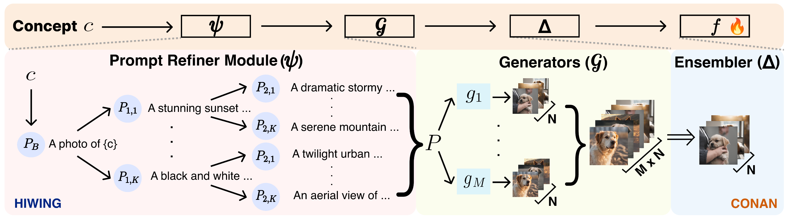

|
I'm a MS. student at Vision and Learning Lab. at Yonsei University advised by Prof. Jonghyun Choi. My research focus is on continual learning, robotics and federated learning. During my M.S., I was fortunate to work as a research intern at the AML (Advanced Machine Learning) team in LG AI research (2023). Currently, I am looking for a research internship position for machine learning and computer vision research. I received B.S. from Yonsei University under the supervision of Prof. Jonghyun Choi. CV / Email / Google Scholar / DBLP / Github |

|
|
2024.06 I am invited to give a talk in Apple research - Practical set‐ups and methods for continual learning |
|
2024.02 A paper is accepted at CVPR 2024 about online continual learning |
|
2024.01 A paper is accepted at ICLR 2024 about embodied continual learning |
|
Research Intern at AML Team (Feb. 2023 ~ Aug. 2023) Mentor: Dr. Moontae Lee |
|  |
Minhyuk Seo, Diganta Misra, Seongwon Cho, Minjae Lee, Jonghyun Choi, arXiv [pdf] [bibtex] |
|
Minhyuk Seo*, Hyunseo Koh*, Jonghyun Choi, Under Review |
|

|
Minhyuk Seo Hyunseo Koh, Wonje Jeung, Min Jae Lee, San Kim, Hankook Lee, Sungjun Cho, Sungik Choi, Hyunwoo Kim, Jonghyun Choi, CVPR 2024, CoLLAs 2024 Workshop [pdf] [bibtex] [code] |

|
Minhyuk Seo*, Byeonghwi Kim*, Jonghyun Choi ICLR 2024, CoLLAs 2024 Workshop [pdf] [bibtex] [code] |

|
Hyunseo Koh, Minhyuk Seo, Jihwan Bang, Hwanjun Song, Deokki Hong, Seulki Park, Jung-Woo Ha, Jonghyun Choi ICLR 2023 [pdf] [bibtex] [code] |
-
2st Place Award - Class-Incremental with Repetition Scenario Challenge - CLVISION Workshop @ CVPR 2024
-
1st Place Award - Continual Test-time Adaptation for Object Detection Challenge - VCL Workshop @ ICCV 2023